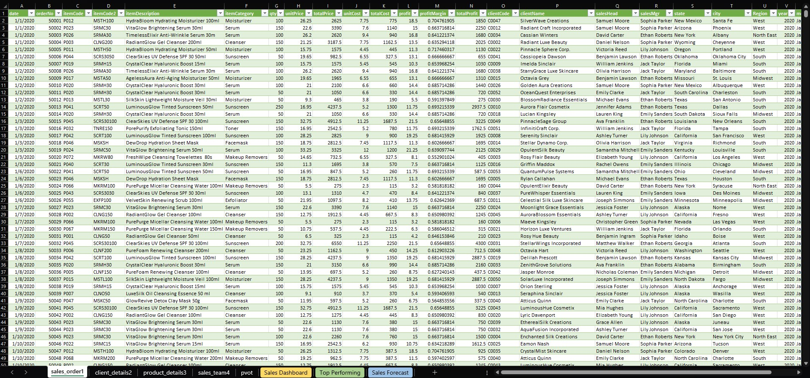

Interactive Sales Dashboard in Microsoft Excel
Project Type: Data Analytics
Tools: Microsoft Excel,
PivotTables, PivotCharts, Slicers, Excel Formulas
An Excel-based sales tracking and reporting solution designed to organize transaction records, analyze sales performance, and present business insights through an interactive dashboard.
Project Overview
Velvetica Beauty Emporium Inc. is a fictional skincare distribution company used as a business case for this Excel project. The scenario focuses on organizing sales transactions, monitoring business performance, and identifying trends through interactive reporting.
The project addresses the need for an organized way to record sales transactions, maintain reference information, and analyze sales performance across products, regions, and sales teams.
The Problem
Without a structured tracking and reporting system, monitoring transactions and identifying sales trends can become time-consuming and inconsistent.
The Objective
Develop an Excel-based solution that supports daily sales monitoring and helps users explore business performance through interactive reports.
The Solution
I developed an Excel workbook that combines sales transaction tracking, supporting master data, and an interactive dashboard.
Sales Data Organization
- Daily sales order transaction records
- Customer reference information
- Product reference information
- Sales team reference information
- Historical sales data from 2020 to 2022
Sales Performance Analysis
- Sales trends over time
- Regional sales performance
- Product sales contributions
- Sales team performance
- Seasonal sales patterns
Key Features
- Interactive Dashboard: Charts and summaries for exploring sales performance.
- Dynamic Filtering: Slicers for year, region, and product category.
- Transaction Tracking: Organized sales order records for monitoring.
- Performance Reporting: Views of sales trends, products, and regions.
Tools & Techniques
- Microsoft Excel
- PivotTables and PivotCharts
- VLOOKUP and SUMIF/SUMIFS
- Data validation
- Conditional formatting
- Slicers for interactive filtering
Project Screenshots
Sales Dashboard Overview
The dashboard presents sales performance through visual summaries and interactive filtering options.

Sales Order Transaction Monitoring
The transaction tracking worksheet organizes sales order information to support monitoring and reporting.

Sales Analysis & Insights
The analysis of historical sales records highlighted differences in performance across periods, regions, products, and sales teams.
| Focus Area | Observation | Business Implication |
|---|---|---|
| Sales Trends | Sales generally increased between 2020 and 2022, with fluctuations across months. | Historical patterns can support sales monitoring and future planning. |
| Seasonality | Higher sales were observed around November and December. | Seasonal demand should be considered when preparing sales and inventory plans. |
| Regional Performance | West and Northeast regions recorded comparatively stronger sales. | Regional differences can help identify areas for further investigation. |
| Product Performance | Velvetica Glow Serum and HydraMax Moisturizer were among the top-selling products. | Product-level sales can help inform replenishment and stocking decisions. |
| Sales Team Performance | Performance varied across regions, with the Midwest team showing weaker results. | Further review may help explain differences in team performance. |
| Inventory | The project analysis identified stock availability concerns for popular products. | Better coordination between sales patterns and inventory monitoring may help reduce stockout risks. |
These findings reflect the project's historical sales scenario and should not be interpreted as current company performance.
Recommendations
Based on the patterns identified in the project, the following actions could support more informed business decisions.
- Improve Inventory Planning: Review sales patterns and monitor stock availability for high-demand products.
- Prepare for Seasonal Demand: Use historical sales trends to support planning for higher-demand periods.
- Investigate Regional Differences: Examine factors contributing to stronger or weaker regional performance.
- Review Sales Team Performance: Compare team results and identify potential opportunities for support.
- Maintain Consistent Reporting: Regularly update transaction records and dashboards to support data-informed decisions.
What I Learned
This project strengthened my experience in organizing data, building interactive reports, and translating analytical findings into practical recommendations.
It also reinforced an important lesson that continues to guide my transition into Data Engineering: reliable analysis starts with well-structured and consistently maintained data.
Project File
Explore the Excel workbook containing the sales tracking and dashboard project.